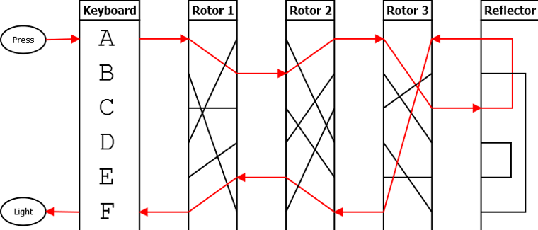
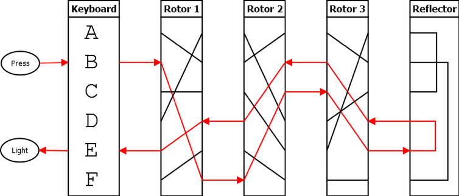
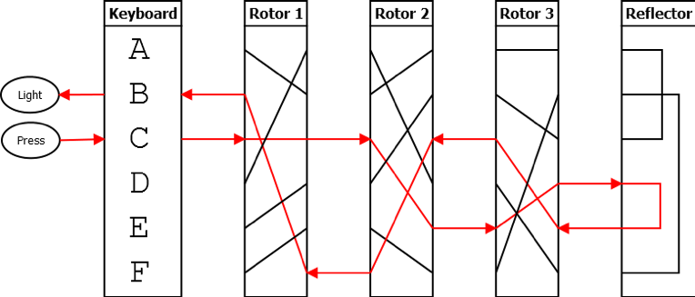
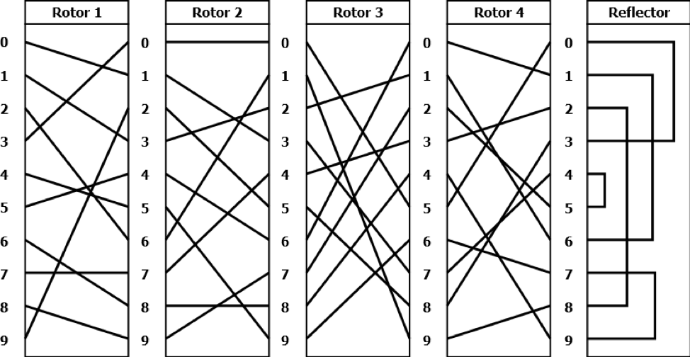

Problem made by Lockheed Martin, is CodeQuest 2018 Problem 19
During World War II, the Germans used the Enigma cipher to encrypt most of their military communications. Thought to be unbreakable, the cipher made use of typewriter-like machines that included a complicated system of rotors to scramble the text of a message. Which rotors were used, in which order, and in what positions they were originally set determined the key used to encrypt and decrypt an Enigma message. This complicated system led to trillions of possible keys and foiled traditional methods of breaking the cipher.
To use an Enigma machine, an officer would press a button on a keyboard. This would send an electrical signal through the machine and into the rotors. Each rotor would have an input and output connection for each letter of the alphabet, but the signals would be scrambled; a signal going into the "A" position may come out at the "E" position instead. Each rotor was wired differently and numbered so they could be easily identified. Once the signal made it through all three rotors, it would go through a reflector which would scramble the letters again and send the signal back through the rotors one more time. The signal would then finally turn on a light showing which letter it had turned into. The officer would write down this letter, then continue to the next letter.
To ensure the cipher’s security, the rotors would rotate while the message was entered. After each letter was pressed, the rightmost rotor would rotate one position. When that rotor returned to its original position (after 26 letters), the middle rotor would rotate one position. Once the right rotor completed another full rotation, the middle rotor would rotate one more position. Once the middle rotor had completed a full rotation in this manner, the left rotor would rotate one position.
The diagrams below show what happens when trying to encrypt the message "ABC" using a six-letter Enigma machine. The first letter, A, becomes B after leaving the left rotor, an A after leaving the middle rotor, and then a C after leaving the right rotor. It enters the reflector, becoming an A again, then goes back through the rotors in reverse order. It then becomes an F, then an E, then an F again as it leaves the left rotor. The light for F turns on, indicating that the original letter A should be encoded as an F.

The right-most rotor then shifts down one position. This causes B to be encoded as E.

The right rotor shifts once more, and the third letter, C, gets encoded as B. The final message is "FEB."

You have been tasked with creating a digital version of the Enigma cipher. Rather than encoding letters of the alphabet, it will encode the digits 0 through 9. Four rotors and a reflector are pictured below. However, only three of these rotors (and the reflector) will be used in each problem. The inputs provided will indicate which rotors are to be used in which positions. The layout of the rotors and reflector is shown below. You have three of each rotor, so rotors can be used more than once to form a sequence of three rotors. The reflector is always in the fourth position.

Each rotor above is shown in starting position 0; however, each key will require that the rotors start in a different position. A rotor in starting position 1 should begin rotated down one position as shown in the examples above; a rotor at starting position 2 should begin rotated down two positions, and so on. The reflector does not rotate and will remain in the position as pictured above.
The first line of the file Prob19.in.txt will contain a positive integer T denoting the number of test cases that follow. Each test case will have the following input:
• A line containing a rotor number (1-4), a space, and that rotor’s starting position (0-9), representing the left rotor
• A line containing a rotor number (1-4), a space, and that rotor’s starting position (0-9), representing the middle rotor
• A line containing a rotor number (1-4), a space, and that rotor’s starting position (0-9), representing the right rotor
• A line containing a number to be encrypted.
2
1 0
2 0
3 0
1234567890
4 4
3 1
1 7
48941075174104174917197107941230
Your program should print out the encrypted numbers. Leading zeros must be included.
4805344463
15065744930355566850000660603093